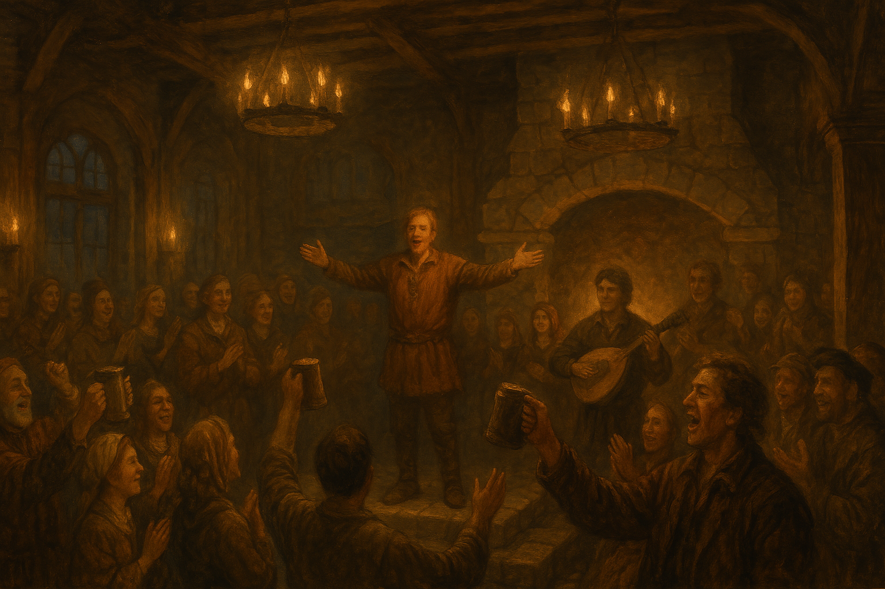

Chapter 6: Heroes of Vowalon
Curse of Vowalon

Curse of Vowalon
15048.07.22
台北市議員成功帶著 Grenland 回到了 Vowalon。
幾名冒險者先行前往 Dawkin’s Shop，取回 Graham 為他們特製的武器。其餘幾位冒險者則帶著 Grenland 前往寂靜殿尋找寇頓神父。Grenland 留下來和神父討論隔日儀式的細節。Midori 自行前往了鎮長家。
在寂靜殿聽說了 Jasmine 失蹤一事後，眾人一起來到了鎮長家，試圖安撫狀況欠佳的鎮長。也因為 Jasmine 沒有留下大家簽下的契約書，在幾度商討後，鎮長給了冒險者們一人 300 枚金幣作為獎賞。大家說好了要在找回 Jasmine 後將賞金多退少補。據說 Jasmine 在兩日前（15048.07.20）早上六、七點出了門，要去寂靜殿，卻從此消失了蹤影，神父也未曾見到 Jasmine 踏入殿內。
大家也去了一趟 Rowdy’s Club，Bruce 正在準備今晚的派對，慶祝台北市議員成功將 Grenland 帶回 Vowalon，而 Vowalon 的詛咒就要終結了。冒險者們打聽了 Jasmine 消失一事，以及關於毒三明治的各種消息。他們從一名鎮民 Benny 的口中了解了 Vowalon 組成了一支搜救隊，四處尋找 Jasmine，卻完全沒有任何線索。而關於毒三明治，則是完全毫無頭緒。
日落前，台北市議員分頭去了 Bamu’s Groceries 和 Dawkin’s Shop，購買了一些日常用品以及補充了裝甲。
日落後，全鎮的人們都來到了勞迪俱樂部狂歡，只有寇頓神父和 Grenland 留在寂靜殿討論明日的儀式。今晚所有的餐點都是 Bruce 請客。一位奇異的男子出現在冒險者們的眼前，自稱 YHWH，是 Tai Tai 我還要的老師。兩人相談甚歡，不過 Tai Tai 我還要下了決心，要皈依 Laxthos，於是 YHWH 帶著 Tai Tai 我還要往寂靜殿走去，敲了敲門。寇頓神父和他們表示好好享受今晚的派對，結束後再回來就可以了。
鎮民高聲呼喊著「沃瓦倫的英雄」，高聲慶賀冒險者們的歸來，而冒險者們也分享著自己在路途中遇到的各種事件，現場非常熱鬧。
派對內，兩名年輕的女子，Fiona 和 Emma 使盡了力氣，向 Paladin 示好，表示一直都很想嫁給一名冒險者。YHWH 順勢便出了三枚戒指給他們，Samael 也奏了一曲《結婚進行曲》炒熱氣氛。Paladin 對於突如其來的狀況難以招架，氣氛有些尷尬，Fiona 傷心地奔向了門外，消失在夜色之中。YHWH、Tai Tai 我還要，以及 Uko 幾分鐘後也出了門外，想去尋找 Fiona，卻找不到他。而為了解決眼前的困窘，Paladin 承諾 Emma，未來等他回到 Vowalon 後，再看看兩人之間怎麼辦。看著好戲沒了，大夥兒才一哄而散，繼續享受各自的派對。
店外，YHWH 因為剛剛施展的法術，觸發了自身的特殊體質，而不小心向四周射出了魔法飛彈，擊中了勞迪俱樂部的窗戶。Bruce 叫罵了一聲，但想起今晚是大家開心的日子，便索性不管了。
Bruce 向 Usioni 提起了 Vowalon 的腕力常勝軍 Benny，邀請兩位來一場腕力比賽。Benny 拔下了自己手上的金戒指作為賭注，而 Usioni 則以自己的戰斧作為賭注。兩人互相看著對方的雙眼，一個瞬間，Benny 竟然軟手了，他大笑著自己喝多了，大方地把自己的金戒指送給了 Usioni。戒指上寫著矮人語的「以家族之名」與「Cozlothramuda」，Benny 的家族姓氏。Usioni 便把戒指戴上了自己的左手無名指，作為自己勝利的徽記。
幾名鎮民邀請 Samael 彈奏他的魯特琴，Samael 以台北市議員大戰狼群的故事即興彈唱了一首曲子，鎮民們卻似乎覺得普普通通。
Midori 不知不覺中離開了勞迪俱樂部，在鎮上探索，卻因為周圍太過漆黑而什麼都看不見。
深夜，鎮民們紛紛離開了勞迪俱樂部，冒險者們只剩下 Tai Tai 我還要還清醒著，自己回去了寂靜殿，其他的冒險者們則花了點時間，爛醉地回到了夜夢者，不過連夜夢者的老闆娘 Clementine 也醉了，他從抽屜抓出了一大把鑰匙讓冒險者們自行挑選。等到 Midori 回來時，也從櫃檯隨意抓了一支鑰匙，進入了房內。
這一晚並不平靜。冒險者們都做了噩夢，不過只有幾位記得夢境的內容。
Paladin 夢見了過去他所居住的村莊內教導他武術的師父將劍插入了自己的胸前，流出了黑色的血液。
Uko 夢見了自己在森林內追逐著野生動物，回首時卻發現那隻動物只剩下骨頭，潔白的讓人不寒而慄。
Usioni 夢見了在 Drogskol 的宅邸，頭痛欲裂的他腦中冒出了聽不懂的語言，以及「Revenge」的字。
Samael 夢見了自己正在用魯特琴彈奏給路人聽，一回神卻發現路人和自己的琴都變成了骷髏，彈奏的指尖破了皮，全是鮮血。
Midori 夢見了自己過去的神父領著他走出教堂外，轉眼間，背後純白的教堂變成黑色，且開始崩塌，壓死了微笑著的神父和他自己。
眾人從夢中驚醒時，天，已經亮了。